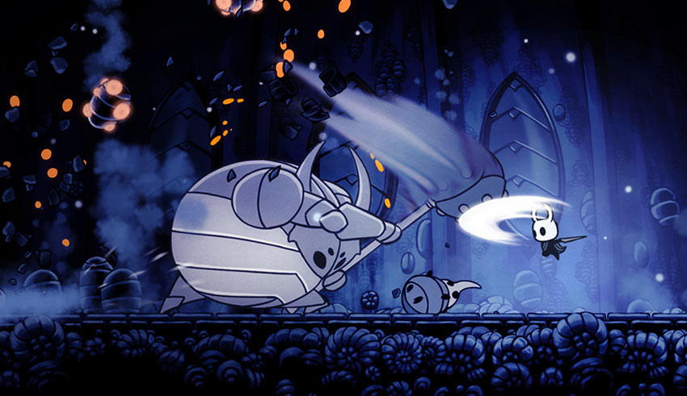
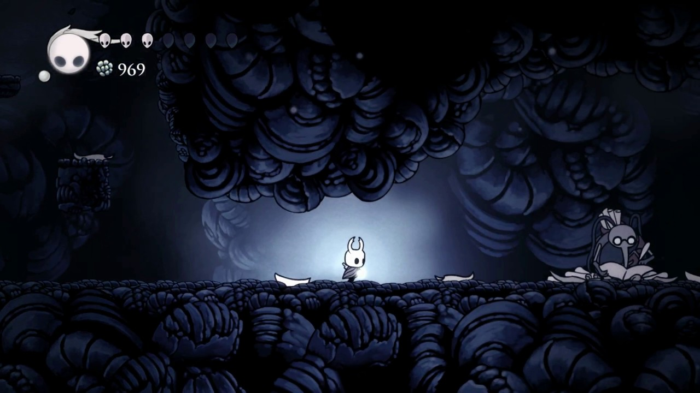
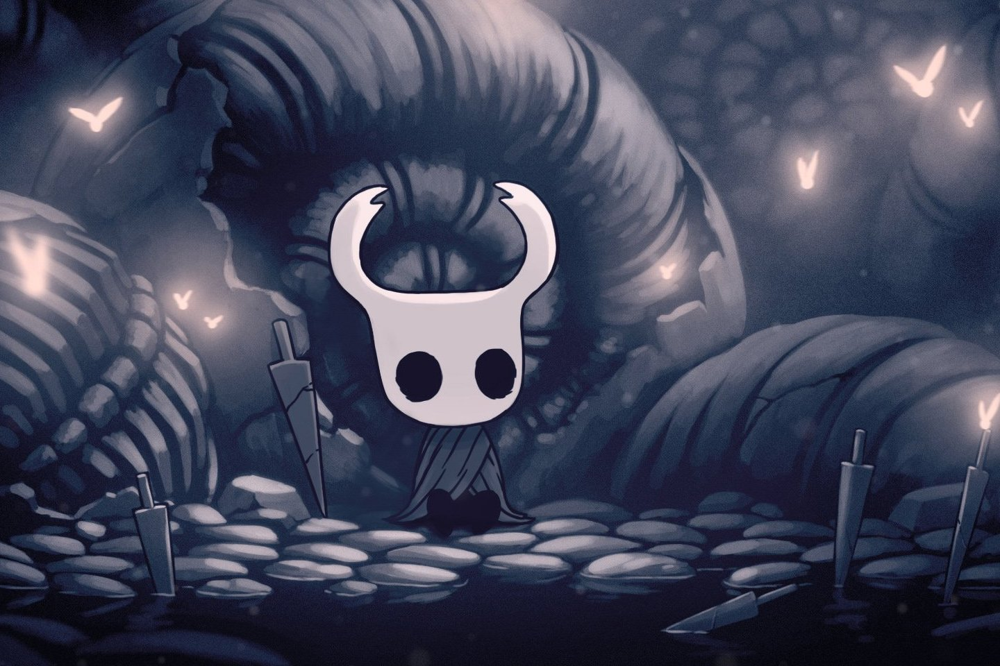

.png)

Hollow Knight é uma obra-prima do mundo dos jogos independentes que mergulha os jogadores em um universo vasto e enigmático. A história se desenrola em Hallownest, um reino subterrâneo repleto de segredos e perigos à espreita. No papel do Cavaleiro Vazio, os jogadores embarcam em uma jornada solitária para desvendar os mistérios que envolvem esse reino abandonado.
O mapa de Hallownest é uma tapeçaria intricada de regiões distintas, cada uma com sua própria estética única e habitantes peculiares. Dos corredores escuros e claustrofóbicos de Cidade das Lágrimas até as paisagens exuberantes de Colinas Verdejantes, cada área cativa os jogadores com sua atmosfera singular. À medida que os jogadores exploram e desvendam segredos, descobrem atalhos que conectam essas áreas de maneiras surpreendentes, revelando a profunda interconectividade do mundo.
O mapa de Hallownest é uma tapeçaria intricada de regiões distintas, cada uma com sua própria estética única e habitantes peculiares. Dos corredores escuros e claustrofóbicos de Cidade das Lágrimas até as paisagens exuberantes de Colinas Verdejantes, cada área cativa os jogadores com sua atmosfera singular. À medida que os jogadores exploram e desvendam segredos, descobrem atalhos que conectam essas áreas de maneiras surpreendentes, revelando a profunda interconectividade do mundo.
Hollow Knight é um exemplo notável do gênero "Metroidvania", onde a exploração, o desbloqueio de habilidades e a descoberta de segredos são fundamentais. Com sua trilha sonora atmosférica, estilo artístico encantador e desafio gratificante, o jogo conquistou uma base de fãs dedicada e se tornou um marco nos anais dos jogos independentes, permanecendo como uma experiência cativante para aqueles que se aventuram em seus enigmas e maravilhas subterrâneas.